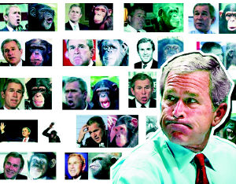

当然，准确地说，这个题目有一个可能的缺点，就是布什前面应该有一个“小”字，但现在连世界足球先生了的小罗都被强烈要求不再小罗了，两届总统了的布什当然也可以布什了。
但这个即使没有了缺点的题目也一定还会受到攻击，这当然不是因为少了一个“小”字，而是把布什和毛泽东连在一起。不过这又有什么可值得反对的，所谓的不同往往隐含着深层的相同。名字都是可笑的，关键看疗效。
布什如今在全世界兜售的药方，和毛泽东的没有什么分别，都是相信一种所谓人为的社会改造过程，毛泽东的文革希望把世界改造成他的世界，布什也一样。至于他们要改造的世界之间有什么区别，这其实并不重要。
当然，布什已经很因地制宜地与时俱进了毛泽东的程式，毛泽东的思想改造，布什已经学得不错了；把人划成这派那派，把世界划成这个世界那个世界，也有点模样了；至于武力输出下的把式，就是他老家的老玩意了，八国联军的时候就玩过！毛泽东希望把红旗插遍全球，都基本只是停留在思想层面；而布什却在现实层面实践着相同的模式，虽然扯的是所谓民主的星条旗。
这种人为的社会改造模式，这种企图脱离现实的所谓理想制造模式，不管制造着什么，本质上是一样的。如今的一夜美人们，如同当年的美国红卫兵一样满怀着可笑的激情。世界总需要笑话的，世界也不缺笑话！